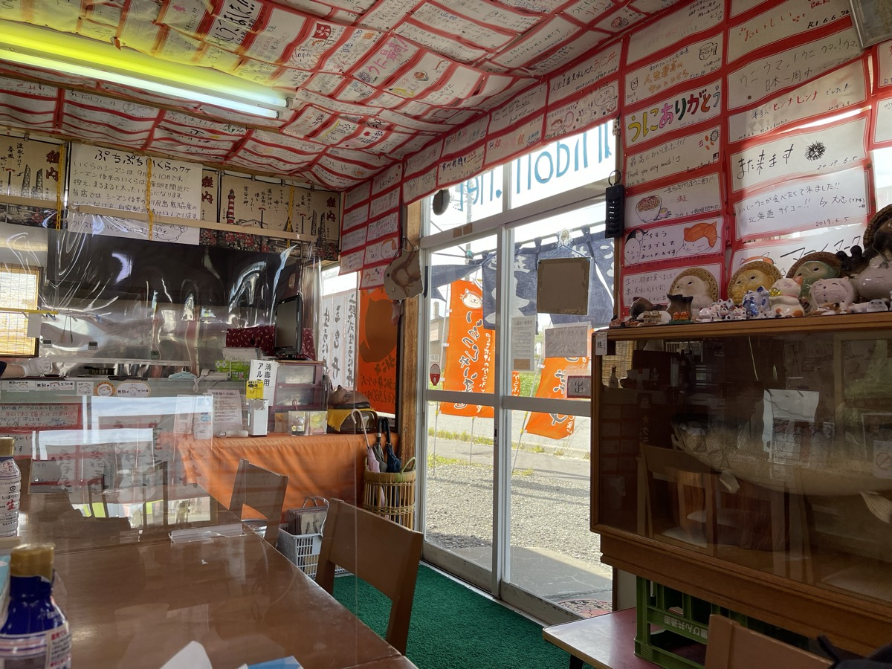
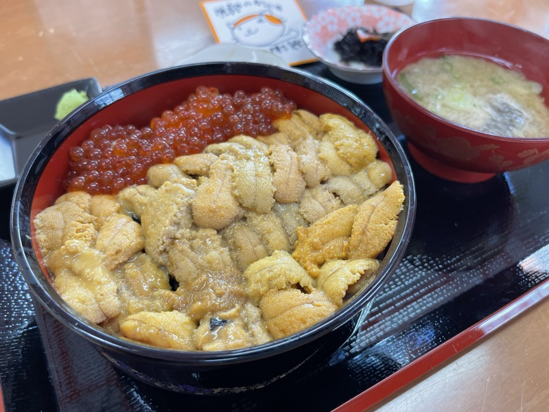
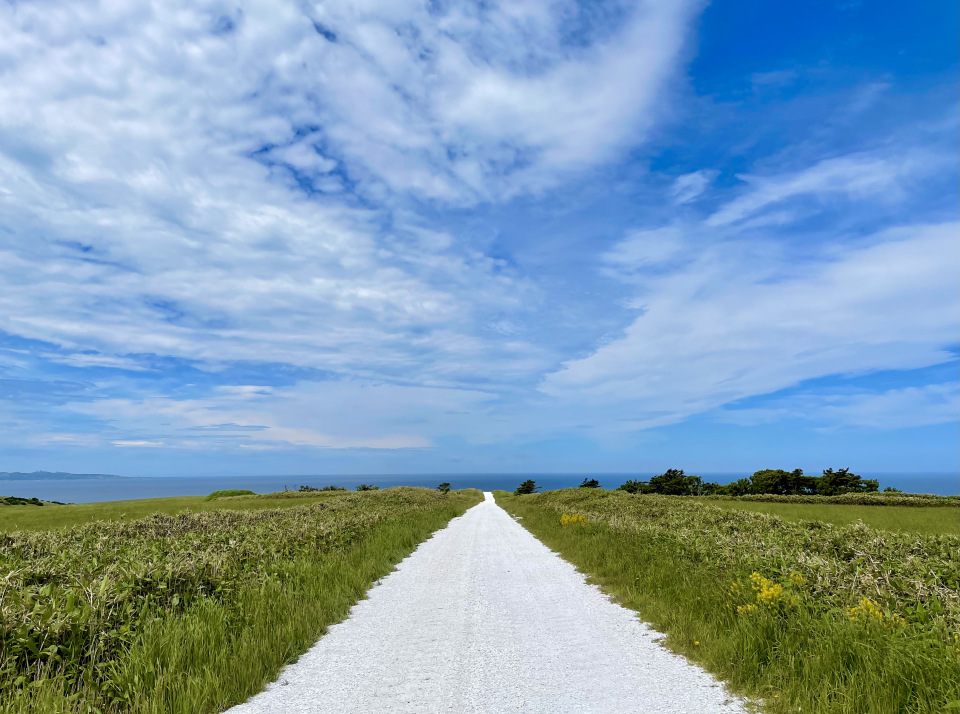
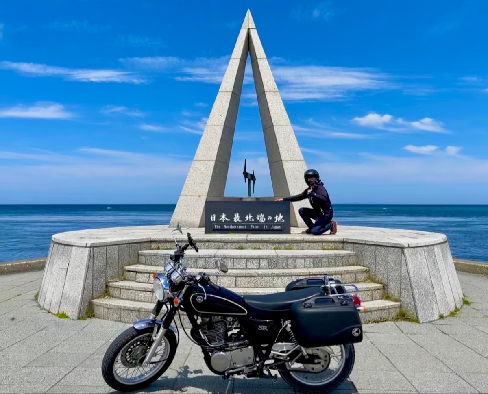
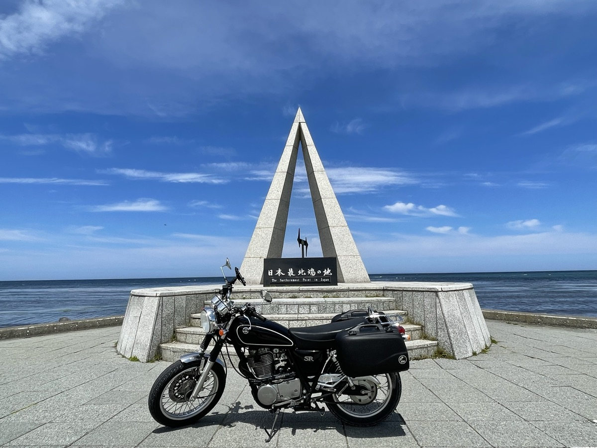
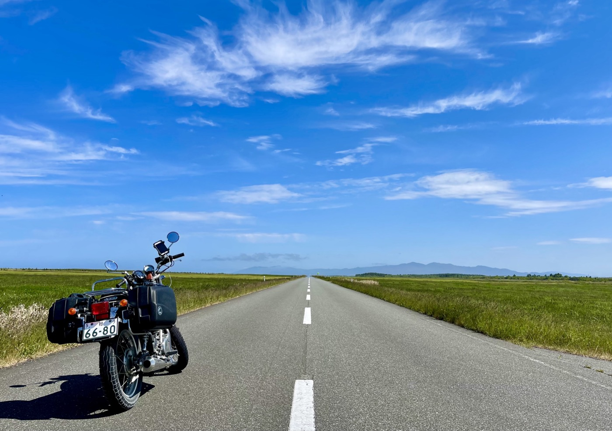
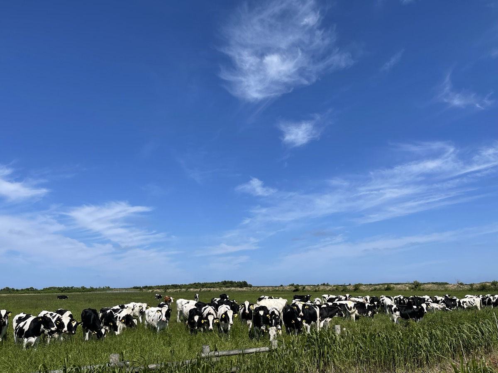
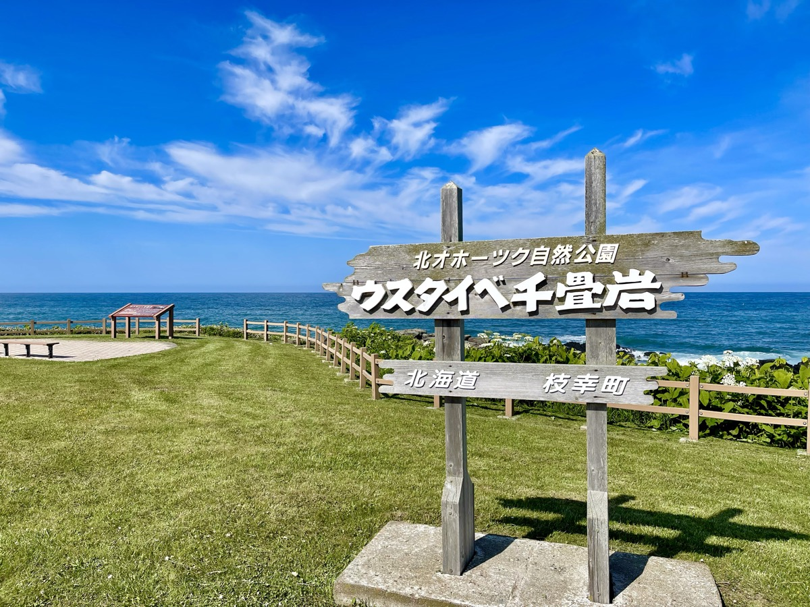
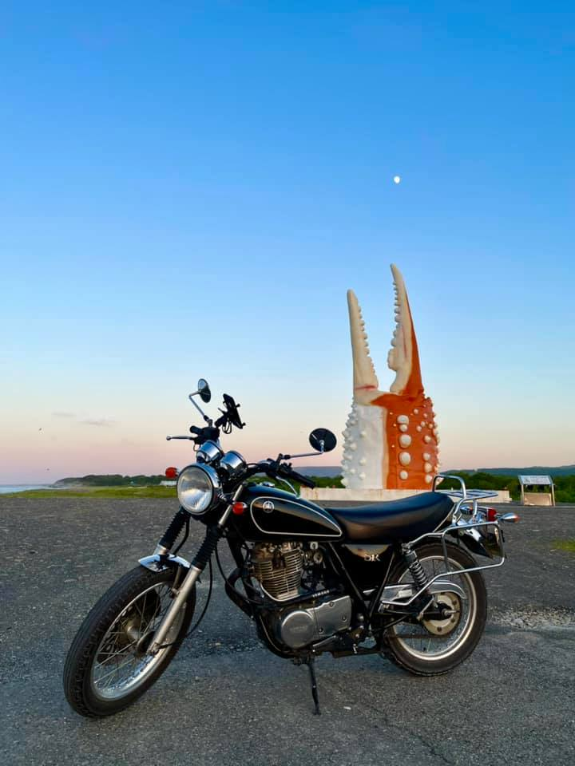
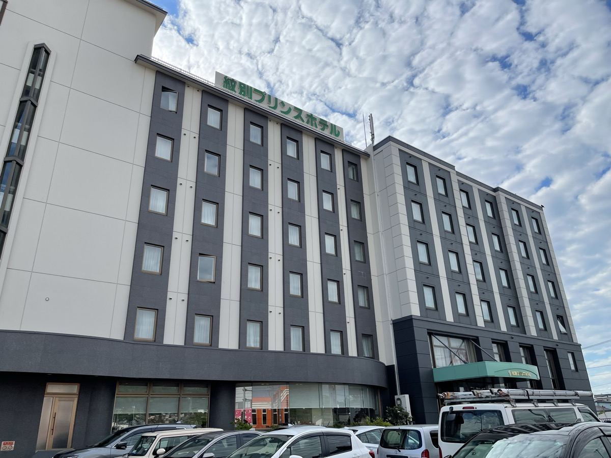

Wakkanai morning. The sky finally cleared. Today is the heart of the trip — Japan's northernmost point at Cape Sōya, the White Road paved with crushed scallop shells, and the rider's pilgrimage spot, the Esanuka Line. All in one ride. I fired up the SR400 and rolled out of Kita-no-Yado.
Wakkanai morning — uni and ikura don
Before Cape Sōya, breakfast in Wakkanai. At a market diner I had uni-ikura don. The sea urchin was creamy and sweet, the salmon roe brought salt — that you can eat this for breakfast is what Hokkaido is.


The White Road — a farm road of crushed scallop shells
Just before Cape Sōya is the White Road. It runs through the Sōya Hills, an agricultural road paved with crushed scallop shells. A bright white line crosses the ridge, and on the far side the blue Sōya sea opens out. On a clear day, the blue-on-white contrast is just gorgeous. It's a working farm road more than a tourist site, so it's quiet — barely anyone there.

Cape Sōya — Japan's northernmost point
Through the White Road and there it is — Cape Sōya. The fact that "there's no road north of here" lands surprisingly hard.


The Esanuka Line — this one nearly made me cry
In Sarufutsu Village: the Esanuka Line. The road every Hokkaido rider knows. Finally here.

I'd seen it in photos so many times, but standing there in person is completely different. To the horizon — really to the horizon — a single straight line of road. Open plain and sea on either side. The sky is so wide you feel exactly how small you are.

I stopped the bike for a while and just stood there. Couldn't say anything. Just the wind and a distant bird call. To be honest — I almost cried. "I'm so glad I came" — straight from the gut.
Esashi — Usutaibe Senjōiwa
Past the Esanuka Line, south down the Okhotsk coast. Along the way I stopped at Usutaibe Senjōiwa in Esashi Town. The cape's name is from the Ainu for "river of the wooded bay," and it turned out to be a stunning spot ringed by 2,000-year-old archaeological remains.

Into Monbetsu — the Crab Claw Monument
Then on into Monbetsu, arriving by evening. The Crab Claw Monument rising over the coast made it official: I was in Monbetsu. The moon was already up, and the sea was sliding into dusk.

Monbetsu night — face to face with a brown bear at the Okhotsk Sky Tower
After checking into Monbetsu Prince Hotel, I decided to head up to the Okhotsk Sky Tower to see the stars. It's a tourist information facility on a hill outside town with an observation deck overlooking the port and the Sea of Okhotsk. Sunset, then stars. Should have been a perfect plan.
About 400 m from the deck
The mountain road was narrower than expected. Paved, but cliff to the left and a guardrail-then-drop on the right. I climbed it on the SR400. The single-cylinder thump was getting absorbed by the forest.
Maybe 400 m before the deck, a black shape appeared in front of me.
A brown bear.
The SR400 had to be loud enough to hear
Maybe 30 m away. A bear, not yet huge in body. Even so — plenty scary. The SR400's single-cylinder note carries clearly even in forest. There's no way the bear hadn't noticed me. And yet — it didn't move. Standing in the middle of the road, just looking at me.
I ran through the options. The road was too narrow to U-turn. Trying to swing around on a slope risked a low-side or a drop. Getting off the bike was out of the question. In the end, all I could do was wait.
I rode past the bear
Felt like two or three minutes. Eventually the bear started to move — pulling toward the guardrail side, on the right. Not fully clearing the road, but enough that I could squeeze past on the left.
I cracked the throttle and pushed past it fast. Riding parallel to the bear with a few meters between us. My heart was hitting hard enough to hurt. I glanced sideways. The bear looked relaxed, like none of this concerned it.
Twenty minutes at the deck
Reached the deck and parked. My hands were shaking. The plan had been to take my time, watch the stars. All I could think about was: "What if that bear is still there on the way down?"
I stayed maybe twenty minutes — less out of stargazing and more out of sheer "how do I get out of here." There's only one road down. That bear might still be on it. I decided to go before dark. Past sunset, even if a bear was moving, I wouldn't see it. I didn't take a single photo from the deck. Wasn't in the mood.
On the way back, same place, same bear
Heading down, I worked the throttle hard and made my own racket — engine, exhaust, whatever I could put out — to broadcast that there was a human here.
Even so, when I got near that spot — there it was. Same place, same posture.
"Oh no, oh no, oh no" on loop in my head. And at the same time: if a bell were going to do it, it'd be doing it. If a thumping single isn't enough to move that bear, a small bell isn't going to.
The bear glanced at me, then slowly cleared the road. I rode past. This time I didn't stop, didn't look back, and ran the bike straight down the mountain. When I saw the lights of town, I genuinely exhaled.
After that, I started carrying bear spray
That evening stuck with me for a long time. That I got past on the SR400 was just luck. If the bear had taken one more step, if my line had been off — different result.
Later, before looping Hokkaido on the XSR900, I bought bear spray as part of the prep. There may not be many moments to use it while actually riding. But for walking around your inn, taking a break next to a parked bike — in Hokkaido, where bears and people share the same space, just having it on you is its own peace of mind.
▶ Related: UDAP 12HP Bear Spray — what Shiretoko taught me about needing one (JA)
Monbetsu Prince Hotel
Back from the bear, finally settled at the Monbetsu Prince Hotel. Local seafood is plentiful, and they have rider-friendly stay plans too. Tomorrow morning, a quick look at the bear park and then inland to Biei and Furano.

Almost cry on the Esanuka Line; come face-to-face with a bear in Monbetsu the same night. Hokkaido has that kind of range.